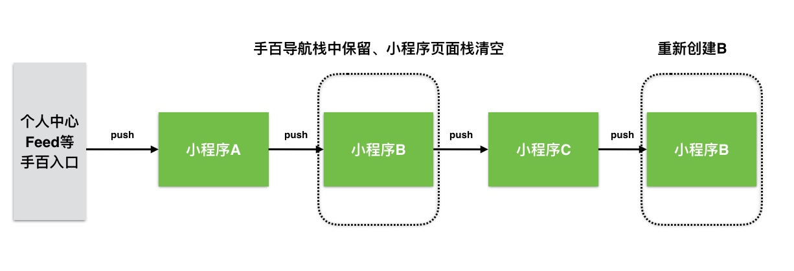

介绍
规范说明
UA 规则
调起协议
分享
客户端 swan-native 接入
Android
简介
名词解释
小程序 Lib 说明
第三方依赖库说明
接入步骤说明
外部宿主接入
百度内部接入
需要接入方实现的功能
支付
聚合收银台微信H5支付改造
贴吧接入聚合支付文档
二维码扫描
位置
分享
图片
地图
地址、发票
夜间模式
开放接口授权相关接入文档
文档
用户反馈
登录
直播
端能力回调说明
背景音乐
视频
音频
需要接入方实现的服务
授权
登录
iOS
简介
名词解释
小程序依赖三方库
小程序库大小统计
小程序开源框架
小程序运行时架构设计
小程序页面栈设计
接入步骤说明
百度内部接入
百度内部接入-公参
百度外部接入
端能力扩展
小程序框架提供给宿主的API
SWAN Authorize Protocol
SWAN Component Touch Util Protocol
SWAN Dialog Protocol
SWAN Mes View Dialog Protocol
SWAN Service Protocol
SWAN Sub Directory Manager Protocol
SWANUI Plugin Util Protocol
SWAN Utilities Protocol
SWAN Web View Navigation Protocol
打点统计
生命周期
预加载
需要接入方实现的功能
adpater层接口实现说明
Config Option
Form
Platform
UI
webview生命周期
二维码扫描
分享
反馈
图片
地图
地址、发票
夜间模式
定位
导航
授权
支付
直播
视频
端能力回调说明
账号
需要接入方实现的服务
Formid
发票
授权
收货地址
前端 swan.js 接入
extension扩展
下发与加载机制
统计事件 list
Demo
开发者工具接入
开发者工具宿主接入步骤
增加宿主配置
开发和调试
开发配置插件
扩展api和组件
模拟器插件
server 端接入
宿主方需要实现的server端接口
外部接入方服务端实现建议
内部接入方接入流程
百度智能小程序开源接入方案功能
CTS 测试
Published with GitBook
小程序页面栈设计
1. 小程序页面栈设计
1.1. 文档版本
文档版本
修改日期
修改概述
0.8
2018-12-19
初始版本
1.2. 设计
因为手百整体框架用一个导航栈，要维持feed、搜索等框架的跳转逻辑（包括其他端能力跳转的框架），如果使用present方案设计，则必须销毁整个小程序，再进行跳转其他框架，方案存在设计漏洞。
方案：外层沿用手百导航栈，跳转每个小程序用手百导航栈，每个小程序单独维护导航栈）
1.3. 生命周期
Created with Raphaël 2.1.4
运行时
运行时
页面栈
页面栈
init
appActive（页面栈处于前台）
appResign（页面栈处于后台）
5分钟后小程序被销毁 | 缓存的小程序超过5个
appUnload（页面栈卸载，只保留rootVC）
再次回到前台
appload（页面栈重新初始化）
dealloc
Created with Raphaël 2.1.4
运行时
运行时
页面栈
页面栈
手势返回 | 关闭小程序
通知告诉运行时
1.4. 小程序调起新的小程序：

results matching "
"
No results matching "
"